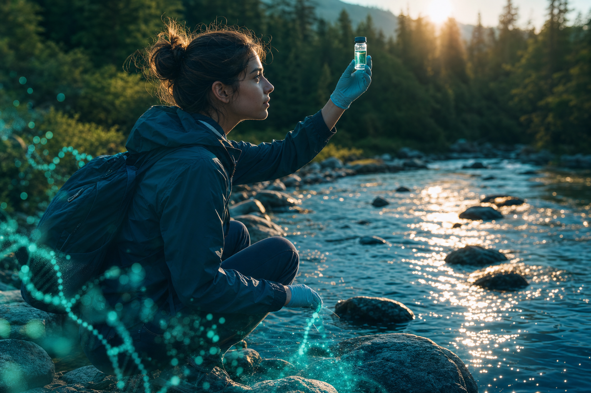
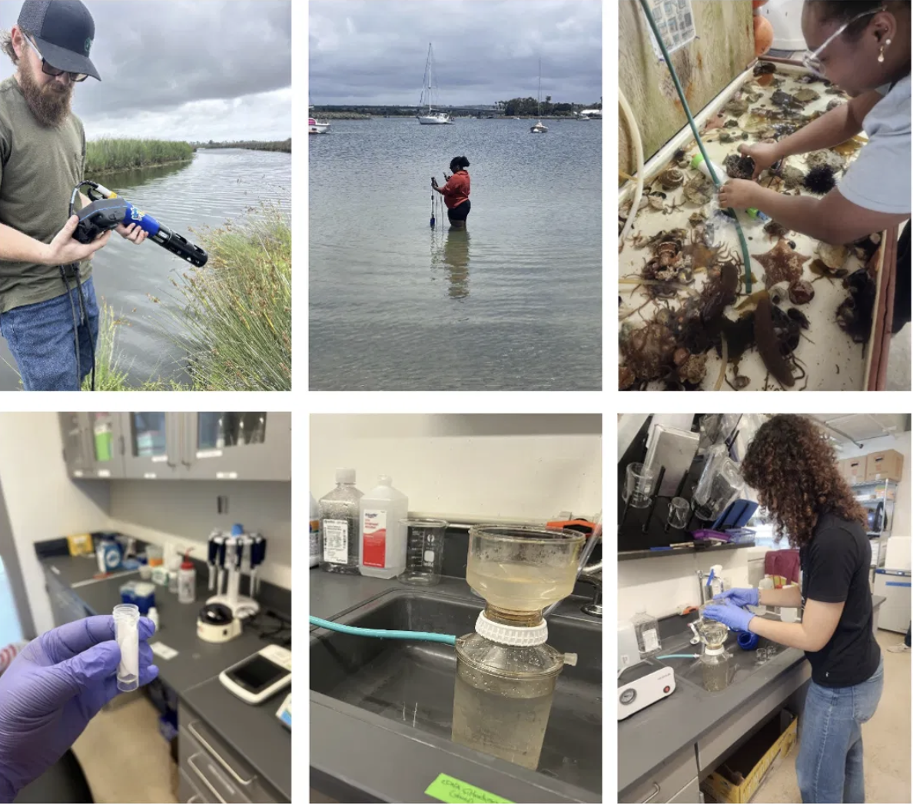
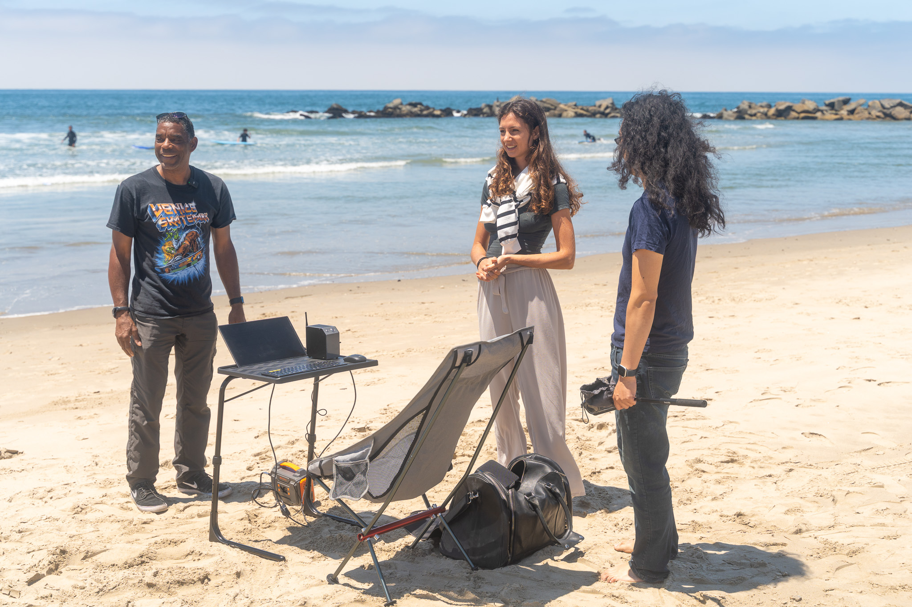
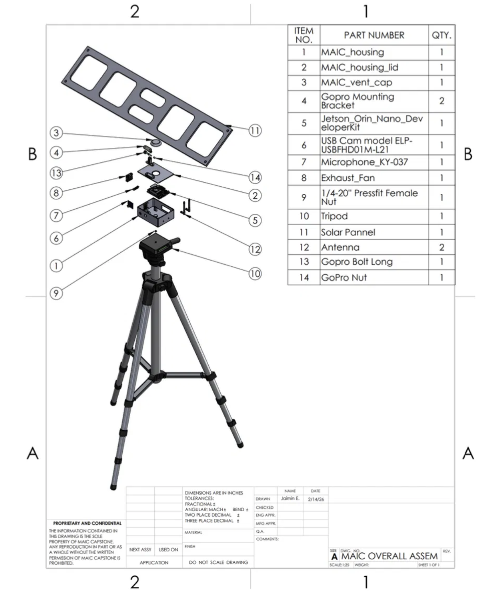
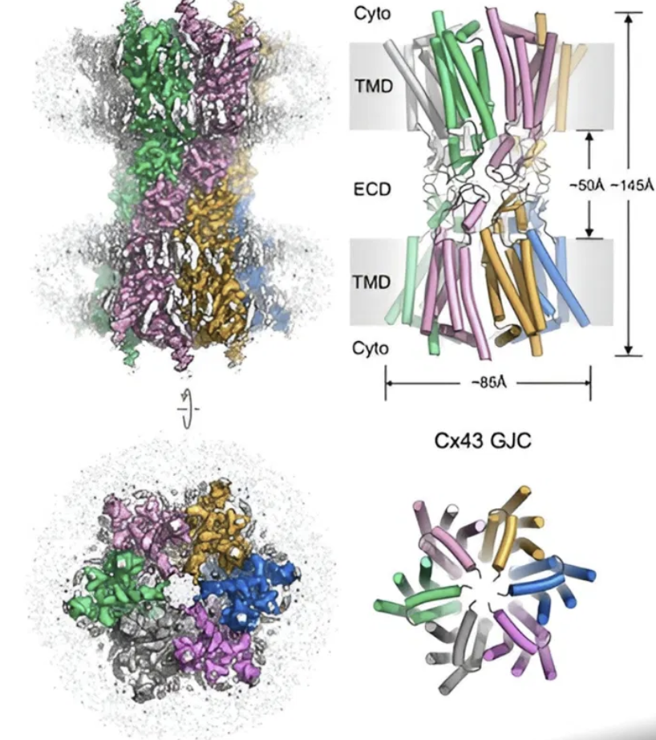

Stories from the field
The journey through DNA, told by the people living it
Follow our students, educators, and partners as they read the living world one sample at a time, where science, education, and stewardship meet.
What you can do with a sample
One vial of water, many kinds of discovery
Environmental DNA turns a scoop of seawater, soil, or air into a record of the life that passed through it. Pick a story below to see how our students and partners put that idea to work, in the field, on the beach, in the forest, and at the frontier of new medicine.
hackathon-venice.jpg
Vibe-coding ocean solutions with kids
On the boardwalk, kids “vibe code” their way from a wild idea to a working prototype for a healthier ocean.
Read the story
Add imageimages/sandiego-wading.jpg
Real ocean research, placed in students' hands
Students trade the textbook for a water probe and turn a vial of bay water into a census of the whole ecosystem.
Read the story
Add imageimages/venice-biomonitoring.jpg
A genomics lab that fits on a folding table
A laptop, a palm-sized sequencer, and a solar panel on the sand read the ocean on the spot, powered by the sun.
Read the story
Add imageimages/bioscope-assembly.jpg
A biomonitoring station you can carry into a forest
A rugged, tripod-mounted sensor pod that watches, listens, and measures a recovering forest all on its own.
Read the story
Add imageimages/connexin-structure.jpg
A vial of seawater, a palette for new medicine
The same environmental DNA that maps a reef is becoming raw material for AI-designed proteins and new medicine.
Read the storyhackathon-singapore.jpg
A rare-disease hackathon in Singapore
Teams in Singapore race to turn genomic data into fresh leads for the patients that rare diseases leave behind.
Read the storyI used to think science happened somewhere far away. Now I know it happens wherever I'm willing to look closely.
Marisol, age 16 · coastal pilot cohort, Los Angeles
Keep following
Be part of the next story
New cohorts launch each season across oceans, freshwater, and forests. Follow the journey, bring the program to your classroom, or partner with us to widen the network of young stewards reading Earth's living library.